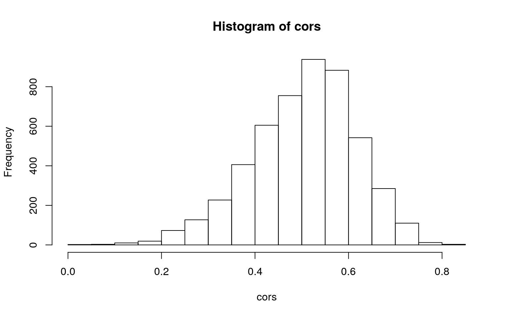
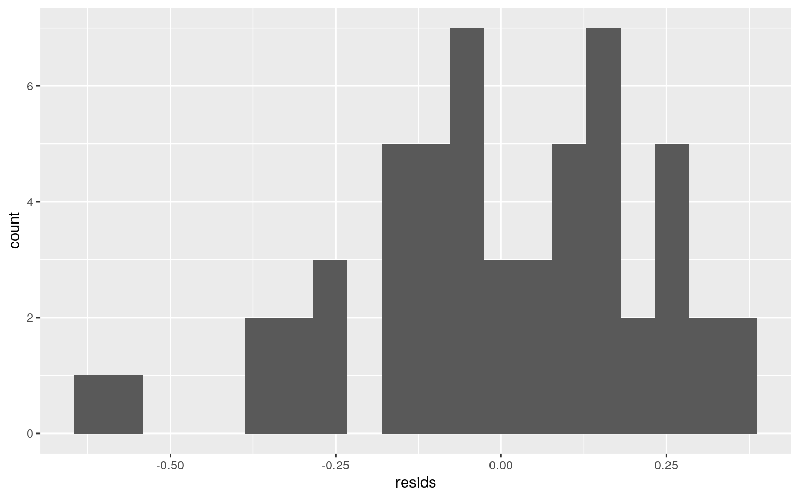
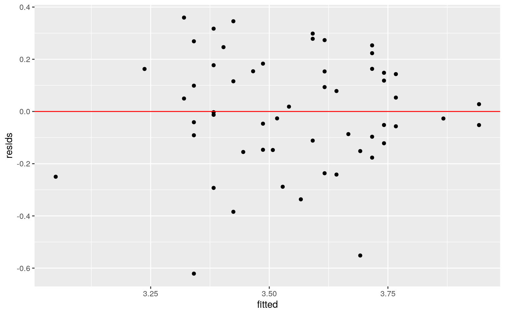
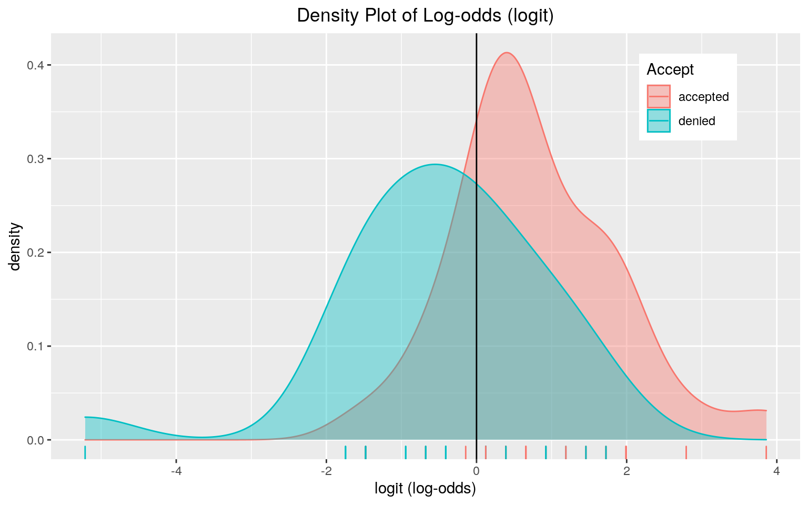
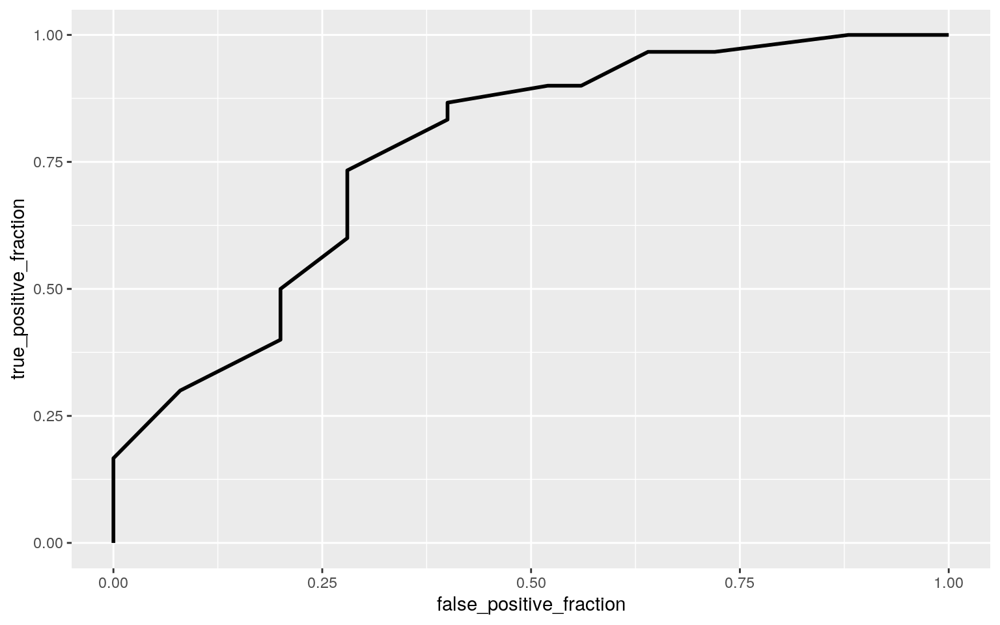

January 1, 0001
Introduction
The dataset MedGPA contains information about the status of medical school admissions, GPA, and MCAT scores from 55 undergraduate students (observations) from a Midwest liberal arts college that were medical school applicants. There are 11 variables: Accept, Acceptance, Sex, BCPM, GPA, VR, PS, WS, BS, MCAT, and Apps. Accept indicates whether the applicant was accepted or denied after applying, and Acceptance is binary for Accept with 1 = accepted, and 0 = denied. Sex illustrates whether the applicant was male or female, and their respective college grade point average is measured as GPA. Their biology/chemistry/physics/math (or science) GPA is indicated with BCPM. The VR, PS, WS, and BSmeasure the verbal reasoning, physical sciences, writing sample, and biological sciences subscore of their total MCAT score (i.e., the sum of those variables is equal to MCAT). Lastly, the Apps variable is a measure of the total number of medical schools that the applicant applied to.
MedGPA <- read_csv("MedGPA.csv")
#Turning factors to categorical and intervals to numeric
MedGPA$Accept<-as.character(MedGPA$Accept)
MedGPA$Sex<-as.character(MedGPA$Sex)
MedGPA$VR<-as.numeric(MedGPA$VR)
MedGPA$PS<-as.numeric(MedGPA$PS)
MedGPA$WS<-as.numeric(MedGPA$WS)
MedGPA$BS<-as.numeric(MedGPA$BS)
MedGPA$MCAT<-as.numeric(MedGPA$MCAT)
MedGPA$Apps<-as.numeric(MedGPA$Apps)
#renaming
MedGPA<-MedGPA%>% select(-X1) %>% mutate(Sex=recode(Sex, F="female", M="male")) %>% mutate(Accept=recode(Accept,D="denied",A="accepted"))
head(MedGPA)## # A tibble: 6 x 11
## Accept Acceptance Sex BCPM GPA VR PS WS BS MCAT Apps
## <chr> <dbl> <chr> <dbl> <dbl> <dbl> <dbl> <dbl> <dbl>
<dbl> <dbl>
## 1 denied 0 female 3.59 3.62 11 9 9 9 38 5
## 2 accepted 1 male 3.75 3.84 12 13 8 12 45 3
## 3 accepted 1 female 3.24 3.23 9 10 5 9 33 19
## 4 accepted 1 female 3.74 3.69 12 11 7 10 40 5
## 5 accepted 1 female 3.53 3.38 9 11 4 11 35 11
## 6 accepted 1 male 3.59 3.72 10 9 7 10 36 5MANOVA
#MANOVA
MedGPAmanova <- manova(cbind(BCPM, GPA, MCAT, Apps)~Accept, data=MedGPA)
summary(MedGPAmanova)## Df Pillai approx F num Df den Df Pr(>F)
## Accept 1 0.31559 5.764 4 50 0.0006788 ***
## Residuals 53
## ---
## Signif. codes: 0 '***' 0.001 '**' 0.01 '*' 0.05 '.' 0.1
' ' 1#Univariate ANOVAs
summary.aov(MedGPAmanova)## Response BCPM :
## Df Sum Sq Mean Sq F value Pr(>F)
## Accept 1 1.6922 1.69216 18.219 8.179e-05 ***
## Residuals 53 4.9225 0.09288
## ---
## Signif. codes: 0 '***' 0.001 '**' 0.01 '*' 0.05 '.' 0.1
' ' 1
##
## Response GPA :
## Df Sum Sq Mean Sq F value Pr(>F)
## Accept 1 1.2947 1.29472 21.879 2.043e-05 ***
## Residuals 53 3.1363 0.05918
## ---
## Signif. codes: 0 '***' 0.001 '**' 0.01 '*' 0.05 '.' 0.1
' ' 1
##
## Response MCAT :
## Df Sum Sq Mean Sq F value Pr(>F)
## Accept 1 212.4 212.402 10.819 0.001789 **
## Residuals 53 1040.5 19.632
## ---
## Signif. codes: 0 '***' 0.001 '**' 0.01 '*' 0.05 '.' 0.1
' ' 1
##
## Response Apps :
## Df Sum Sq Mean Sq F value Pr(>F)
## Accept 1 3.5 3.5006 0.1529 0.6973
## Residuals 53 1213.2 22.8911#post-hoc t tests for significant ANOVAs
pairwise.t.test(MedGPA$BCPM,MedGPA$Accept, p.adj="none")##
## Pairwise comparisons using t tests with pooled SD
##
## data: MedGPA$BCPM and MedGPA$Accept
##
## accepted
## denied 8.2e-05
##
## P value adjustment method: nonepairwise.t.test(MedGPA$GPA,MedGPA$Accept, p.adj="none")##
## Pairwise comparisons using t tests with pooled SD
##
## data: MedGPA$GPA and MedGPA$Accept
##
## accepted
## denied 2e-05
##
## P value adjustment method: nonepairwise.t.test(MedGPA$MCAT,MedGPA$Accept, p.adj="none")##
## Pairwise comparisons using t tests with pooled SD
##
## data: MedGPA$MCAT and MedGPA$Accept
##
## accepted
## denied 0.0018
##
## P value adjustment method: none#type-I error rate
1-(0.95^8)## [1] 0.3365796#bonferonni adjustment
0.05/8## [1] 0.00625##ASSUMPTIONS
library(rstatix)
group <- MedGPA$Accept
DVs <- MedGPA %>% select(BCPM, GPA, MCAT, Apps)
#Test multivariate normality for each group (null: normality met)
sapply(split(DVs,group), mshapiro_test)## accepted denied
## statistic 0.9533242 0.832119
## p.value 0.2073555 0.0008212247#Test homogeneity of covariance-Box's M test (null: homogeneity of vcov mats assumption met)
box_m(DVs, group)## # A tibble: 1 x 4
## statistic p.value parameter method
## <dbl> <dbl> <dbl> <chr>
## 1 7.03 0.723 10 Box's M-test for Homogeneity of
Covariance MatricesAfter running MedGPAmanova, there is at least one acceptance that differs for at least one response variable (BCPM, GPA, MCAT, Apps) (Pillai trace=0.31559, pseudo F (450)=5.764, p=0.0006788). There is a significant difference in BCPM, GPA, and MCAT between acceptances (F = 18.219, df = 53, p = 8.179e-05), (F = 21.879, df = 53, p = 2.043e-05), (F = 10.819, df = 53, p = 0.001789), respectively. There were 8 tests done in all (1 MANOVA, 4 ANOVAs, and 3 post-hoc t tests) with an overall type-I error rate of 0.3368, so a (bonferroni adjusted) significance level should be 0.00625 to keep the overall type-I error rate at 0.05. Out of the 3 significant post hoc tests before adjustment, they are all still significant. After testing a few of the MANOVA assumptions, the assumption of random samples and independent observations was likely met. Because we fail to reject the null for accepted based on the dependent variables (p-value=0.207), normality was met, but the denied group rejected the null (0.0008), which means normality was not met. The Box’s M test p-value was 0.723, so we fail to reject the null, meaning the homogeneity of vcov mats assumption was met.
Randomization Test: Correlation
set.seed(348)
cors <- vector()
for(i in 1:5000){
cors[i] <- MedGPA %>% slice(sample(1:n(),replace=T))%>%summarize(cor(BCPM,MCAT)) %>% pull
}
#visualization
hist(cors)
#correlation
MedGPA %>% select(BCPM, MCAT) %>% cor()## BCPM MCAT
## BCPM 1.0000000 0.5153093
## MCAT 0.5153093 1.0000000#95% confidence interval
quantile(cors,c(.025, .975))#significantly different because 0 is not between the two ## 2.5% 97.5%
## 0.2604968 0.6999446The null hypothesis is that there is no linear correlation (i.e., the correlation coefficient is 0). The alternative hypothesis is that there is a linear correlation (i.e., the correlation coefficient is not equal to 0). The 95% confidence interval does not include 0 between the lower 2.5% and upper 97.5%, so we can reject the null hypothesis. Thus, there is a significant linear correlation between BCPM and MCAT scores. The lower limit of the bootstrapped 95% confidence interval is 0.26, and the upper limit is 0.6999.
Linear Regression
library(sandwich)
library(lmtest)
#centering MCAT
MedGPA$MCAT_c <- MedGPA$MCAT - mean(MedGPA$MCAT, na.rm=T)
fit<-lm(GPA~Accept*MCAT_c, data=MedGPA)
summary(fit)##
## Call:
## lm(formula = GPA ~ Accept * MCAT_c, data = MedGPA)
##
## Residuals:
## Min 1Q Median 3Q Max
## -0.6211 -0.1342 -0.0027 0.1585 0.3597
##
## Coefficients:
## Estimate Std. Error t value Pr(>|t|)
## (Intercept) 3.648425 0.044935 81.194 < 2e-16 ***
## Acceptdenied -0.218452 0.066970 -3.262 0.00198 **
## MCAT_c 0.025033 0.010078 2.484 0.01632 *
## Acceptdenied:MCAT_c -0.004235 0.013981 -0.303 0.76319
## ---
## Signif. codes: 0 '***' 0.001 '**' 0.01 '*' 0.05 '.' 0.1
' ' 1
##
## Residual standard error: 0.2253 on 51 degrees of freedom
## Multiple R-squared: 0.4157, Adjusted R-squared: 0.3813
## F-statistic: 12.09 on 3 and 51 DF, p-value: 4.288e-06#visualization
MedGPA %>% select(GPA, MCAT, Accept) %>% na.omit %>%
ggplot(aes(MCAT, GPA, color = Accept)) +
geom_point() + geom_smooth(method = "lm") + geom_vline(xintercept = mean(MedGPA$MCAT,
na.rm = T), lty = 2)
#proportion of variation
summary(fit)$r.sq ## [1] 0.4156693#testing homoskedasticity assumption- Ho: homoskedsastic
bptest(fit) #p-value > 0.05 = fail to reject null##
## studentized Breusch-Pagan test
##
## data: fit
## BP = 2.6577, df = 3, p-value = 0.4475#testing normality assumption
resids<-fit$residuals
ggplot()+geom_histogram(aes(resids), bins=20)
shapiro.test(resids) #Ho: true distribution is normal##
## Shapiro-Wilk normality test
##
## data: resids
## W = 0.96794, p-value = 0.1486#testing linearity assumption
fitted<-fit$fitted.values
ggplot()+geom_point(aes(fitted,resids))+geom_hline(yintercept=0, color='red')
#robust standard errors
coeftest(fit, vcov = vcovHC(fit))##
## t test of coefficients:
##
## Estimate Std. Error t value Pr(>|t|)
## (Intercept) 3.6484250 0.0441074 82.7168 < 2.2e-16 ***
## Acceptdenied -0.2184519 0.0702841 -3.1081 0.0030762 **
## MCAT_c 0.0250333 0.0063938 3.9153 0.0002689 ***
## Acceptdenied:MCAT_c -0.0042350 0.0182837 -0.2316
0.8177535
## ---
## Signif. codes: 0 '***' 0.001 '**' 0.01 '*' 0.05 '.' 0.1
' ' 1The mean/predicted GPA for accepted students with a score of zero on the MCAT is 3.648. For every one-unit increase in MCAT, the predicted GPA goes up by 0.025 for those that are accepted. For every one-unit increase in Acceptdenied, the predicted GPA goes down by 0.218. The slope of MCAT on GPA for Acceptdenied is 0.004 less than for Acceptaccepted. The model explains 0.4157 of the variation in the outcome. When testing the assumption of homoskedasticity, we fail to reject the null hypothesis, so we have met the homoskedastic assumption (BP=2.658, df=3, p-value=0.448). We can also fail to reject the null for the Shapiro-Wilk test, so the distribution is normal (W=0.968, p-value=0.149). The scatterplot illustrates that the linearity assumption was met. Redoing the regression using robust standard errors, the p-vlaue for Acceptdenied increased slightly but is still significant, and the standard error is roughly the same. The p-vlaue for MCAT_c decreased slightly but is still significant after using robust standard errors, and the standard error decreased by roughly 0.004. Because both are still significant, we reject the null. The interaction Acceptdenied:MCAT_c had an increase in the p-value and standard errors, but the results remained the same in that we fail to reject the null. The intercept remained relatively steady and still has the same results (reject the null).
Rerunning Regression Model
# resampling residuals
fit<-lm(GPA~Accept*MCAT_c, data=MedGPA)
resids <- fit$residuals #save residuals
fitted <- fit$fitted.values #save yhats
set.seed(348)
resid_resamp <- replicate(5000, {
new_resids <- sample(resids, replace = TRUE) #resample resids w/ replacement
MedGPA$new_GPA <- fitted + new_resids #add new resids to yhats to get new 'data'
fit <- lm(new_GPA ~ Accept*MCAT_c, data = MedGPA) #refit model
coef(fit) #save coefficient estimates (b0, b1, etc)
})
## Estimated SEs
resid_resamp %>% t %>% as.data.frame %>% summarize_all(sd)## (Intercept) Acceptdenied MCAT_c Acceptdenied:MCAT_c
## 1 0.0424387 0.06356751 0.009739742 0.01326808The boostrap standard error resampling residuals were very close to the original standard errors. The resampled residuals were only slightly less than the original standard errors, and the difference between them and the robust standard errors was greater (i.e., most of the robust standard errors were larger). Because it matches the original model and that resampling residuals assumes that the original model is correct, we would still reject the null hypothesis for Acceptdenied and MCAT_c.
Logistic Regression
library(plotROC)
fit2<-glm(Acceptance~Sex+MCAT, data=MedGPA, family="binomial")
coeftest(fit2)##
## z test of coefficients:
##
## Estimate Std. Error z value Pr(>|z|)
## (Intercept) -8.951419 3.353909 -2.6690 0.007609 **
## Sexmale -1.066245 0.633348 -1.6835 0.092277 .
## MCAT 0.266892 0.094071 2.8371 0.004552 **
## ---
## Signif. codes: 0 '***' 0.001 '**' 0.01 '*' 0.05 '.' 0.1
' ' 1exp(coef(fit2))## (Intercept) Sexmale MCAT
## 0.0001295533 0.3442990112 1.3058995224#confusion matrix
prob<-predict(fit2,type="response")
table(predict=as.numeric(prob>.5),truth=MedGPA$Acceptance)%>%addmargins## truth
## predict 0 1 Sum
## 0 15 5 20
## 1 10 25 35
## Sum 25 30 55#Accuracy = 0.727
(15+25)/55## [1] 0.7272727#Sensitivity (TPR)=0.833
25/30## [1] 0.8333333#Specificity (TNR)=0.6
15/25## [1] 0.6#Precision (PPV)=0.714
25/35## [1] 0.7142857#Density plot of logit
MedGPA$logit<-predict(fit2,type="link") #get log-odds for everyone
MedGPA%>%ggplot()+geom_density(aes(logit,color=Accept,fill=Accept), alpha=.4)+
theme(legend.position=c(.85,.85))+geom_vline(xintercept=0)+xlab("logit (log-odds)")+
geom_rug(aes(logit,color=Accept))+
ggtitle("Density Plot of Log-odds (logit)")+
theme(plot.title = element_text(hjust = 0.5))
#ROC curve
ROCplot<-ggplot(MedGPA)+geom_roc(aes(d=Acceptance,m=prob), n.cuts=0)
ROCplot
#AUC =0.77 = fair
calc_auc(ROCplot)## PANEL group AUC
## 1 1 -1 0.77The odds of being accepted for female students is 0.00013. The odds of being accepted for male students are 0.344 times that of female students. Lastly, the odds of acceptance for females based on MCAT is 1.306. The accuracy is 0.727, sensitivity (TPR) is 0.833, specificity (TNR) is 0.6, and precision (PPV) is 0.714. All of the values are not extremely high. However, they are above 0.5, and are relatively fair, so the overall outcome is good. From the ROC plot and calculating the AUC to be 0.77, the sensitivity and specificity is considered “fair” because AUC summarizes both values into one.
Logistic Regression: All Variables
MedGPA2<-MedGPA %>% na.omit() %>% select(-Accept, -logit)
fit3<-glm(Acceptance~., data=MedGPA2, family="binomial")
prob2 <- predict(fit3,type="response")
#In-sample Classification Diagnostics
class_diag(prob2, MedGPA2$Acceptance)## acc sens spec ppv auc
## 1 0.8888889 0.9 0.875 0.9 0.95#10-fold CV
set.seed(1234)
k=10 #choose number of folds
data<-MedGPA2[sample(nrow(MedGPA2)),] #randomly order rows
folds<-cut(seq(1:nrow(MedGPA2)),breaks=k,labels=F) #create folds
diags<-NULL
for(i in 1:k){
## Create training and test sets
train<-data[folds!=i,]
test<-data[folds==i,]
truth<-test$Acceptance ## Truth labels for fold i
## Train model on training set (all but fold i)
fit3<-glm(Acceptance~.,data=train,family="binomial")
## Test model on test set (fold i)
probs<-predict(fit3,newdata = test,type="response")
## Get diagnostics for fold i
diags<-rbind(diags,class_diag(probs,truth))
}
summarize_all(diags,mean) #average diagnostics across all k folds## acc sens spec ppv auc
## 1 0.78 0.775 0.8266667 0.8333333 0.8994444#LASSO
library(glmnet)
set.seed(1234)
y<-as.matrix(MedGPA2$Acceptance) #grab response
x<-model.matrix(Acceptance~.,data=MedGPA2)[,-1]#grab predictors
head(x)## Sexmale BCPM GPA VR PS WS BS MCAT Apps MCAT_c
## 1 0 3.59 3.62 11 9 9 9 38 5 1.7272727
## 2 1 3.75 3.84 12 13 8 12 45 3 8.7272727
## 3 0 3.24 3.23 9 10 5 9 33 19 -3.2727273
## 4 0 3.74 3.69 12 11 7 10 40 5 3.7272727
## 5 0 3.53 3.38 9 11 4 11 35 11 -1.2727273
## 6 1 3.59 3.72 10 9 7 10 36 5 -0.2727273cv<-cv.glmnet(x,y,family="binomial")
lasso<-glmnet(x,y,family="binomial",lambda=cv$lambda.1se)
coef(lasso)## 11 x 1 sparse Matrix of class "dgCMatrix"
## s0
## (Intercept) -14.72542379
## Sexmale -0.57864832
## BCPM .
## GPA 2.25362630
## VR .
## PS 0.18495994
## WS -0.03764313
## BS 0.58161467
## MCAT .
## Apps .
## MCAT_c .#10-fold CV (with LASSO variables)
MedGPA3<-MedGPA2%>%mutate(Male=ifelse(Sex=="Male",1,0))
set.seed(1234)
k=10 #choose number of folds
data<-MedGPA3[sample(nrow(MedGPA3)),] #randomly order rows
folds<-cut(seq(1:nrow(MedGPA3)),breaks=k,labels=F) #create folds
diags<-NULL
for(i in 1:k){
## Create training and test sets
train<-data[folds!=i,]
test<-data[folds==i,]
truth<-test$Acceptance ## Truth labels for fold i
## Train model on training set (all but fold i)
fit4<-glm(Acceptance~Male+GPA+PS+WS+BS,data=train,family="binomial")
## Test model on test set (fold i)
probs<-predict(fit4,newdata = test,type="response")
## Get diagnostics for fold i
diags<-rbind(diags,class_diag(probs,truth))
}
summarize_all(diags,mean) #average diagnostics across all k folds## acc sens spec ppv auc
## 1 0.82 0.8666667 0.7766667 0.83 0.8786111When predicting Acceptance from the rest of the variables, the in-sample classification diagnostics were 0.889 for accuracy, 0.9 for sensitivity, 0.875 for specificity, 0.9 for precision, and 0.95 for AUC. The AUC is considered great. After performing a 10-fold cross-validation with the same model, the accuracy was 0.78, sensitivity was 0.775, specificity was 0.8267, precision was 0.833, and the ACU was 0.899. The AUC decreased from the in-sample metrics, but it can be considered “good”. Because it decreased, the model was overfit. After performing LASSO, the sexmale, GPA, PS, WS, and BS variables were retained. When using the variables chosen by LASSO for 10-fold cross validation, the accuracy was 0.82, sensitivity was 0.867, specificity was 0.777, precision was 0.83, and the AUC was 0.879. All of the values were worse than the in-sample classification diagnostics, but were slightly better than the first 10-fold cross validation, except the specificity, precision, and AUC were worse. However, the AUC is still considered “good”.